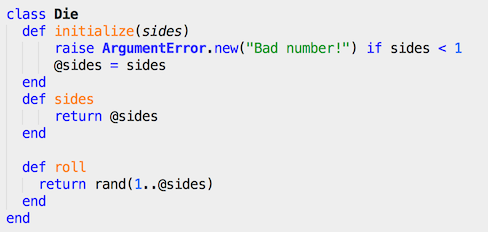

Defining and Instantiating a Class in Ruby
Apr 12th, 2014
Phase0 / Week 5 of Dev Bootcamp was a great week. Went through Ruby Class basics, and got my hands on The Well-Grounded Rubyist book.
For those not familiar with Ruby or programming, In a previous posting I briefly compared Ruby Classes/JavaScript constructor methods and how they act as blueprint templates; and that variables and methods can be defined within them. Today I'd like to go into part two of that post, and discuss this specifically in the scope of Ruby.
So to start up, here's the not-so-easy to follow narrative (bear with me for a moment).
Classes in Ruby are first-class objects - each is an instance of the class Class. When a new class is defined, an object of type Class is created and assigned to a constant("Name" for example). When Name.new is called to create a new object, the new class method in Class is run by default, which in turn invokes allocate to allocate memory for the object, before finally calling the new object's initialize method. The construction is done via the new class method, the initialization is done via the initialize instance method.
Okay, now that I've prefaced this post with the most hard-to-follow narrative (yep, I didn't understand it at first either), I've written below a real example of a sample class, which I find makes this notion of Class much easier to comprehend:
In the example above, I am defining a simple class that simulates rolling a die with variable number of sides. Describing this in pseudo-code:
- Defined a class and named it Die
- I made Die able to accept one variable called sides. If the number of sides is not a positive number, it raises an error at initalization, otherwise it initializes and creates the instance variable @sides
- Created an instance method called sides. It's a simple method that just returns the number of sides.
- Created an instance method called roll. This returns a random number between 1 and the number of sides defined when Die was initalized.
So going line-by-line, it's actually not as hard as it sounds. To create a template object, define it as a class and give it a name (in this case, Die). Keep in mind that a class needs to lead with a capital letter since it's so blueprint-special! Then some variables to be used need to be initialized (in this case, number of sides). Then create some methods that may (or may not, up to you!) use the initialized variables (methods sides and roll).
Once this code has been created, this class can be called as you like by doing something like:
mycooldie = Die.new(6)
This creates a new instance of Die called mycooldie with 6 sides initiated.
mycooldie.sides
This looks up how many sides there are for mycooldie, as we all forget sometimes!
mycooldie.roll
This simulates a dice roll and returns a random number between 1 and the number of sides of the die.
And there you have it. How to create a blueprint class with some methods, and then instantiate (I can't believe that's a real word) it in Ruby. Very classy!